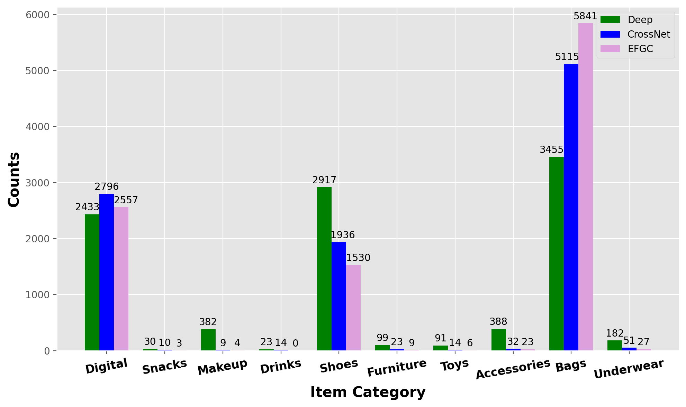
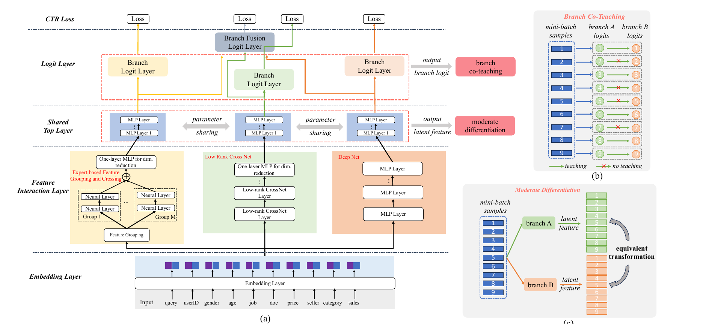

SHARE
Ranking teams should read this one, because it points out an often overlooked waste in multi-branch models: the branches are good at different samples, yet never learn from each other in training. CTR models often place several feature-crossing networks side by side and simply average or concatenate their outputs, with each branch trained on its own. The Pailitao team at Taobao (search by photo) makes three branches correct each other during training. On a given sample, if one branch gets the click right and another gets it wrong, the right branch's prediction is used to teach the wrong one. An extra constraint requires that one branch's hidden vector, multiplied by an orthogonal matrix (like switching to a different set of coordinate axes), be close to the other branch's vector, so each branch may use its own axes, but which samples are similar to which must stay consistent. In an online A/B test, CTR rose from 10.37% to 10.46% and GMV grew 1.62% relative. The gain from multiple branches comes not just from adding branches but from letting them fix each other where they disagree.
I would suggest that anyone working on fine ranking spend half an hour on it, for two reasons: both training constraints are just extra loss terms that leave the serving structure unchanged, and the paper ships TensorFlow code for the losses, so it is cheap to reproduce. Where to discount it is also clear: the online gain mixes in the contribution of a new branch, which I separate out below.
What problem is it actually solving?
Models like DCNv2 have two branches: an MLP that learns crosses implicitly and a CrossNet that learns them explicitly, with the two results merged at the end. Each side trains on its own, and the merge is only an average or a concatenation. The problem is that different branches are good at different samples.
The paper runs an intuitive count on Pailitao data: each branch picks the 10,000 samples it predicts best (lowest logloss), and we look at which categories they fall into. In the figure below, EFGC (the branch the paper adds, which groups features by business logic before crossing them; details later) is one of the three branches. Bags account for 5841 samples in the EFGC branch but only 3455 in the Deep branch; shoes go the other way, with 2917 in Deep and only 1530 in EFGC. In other words, on the same data, the samples each branch learns well are different groups.

Let us act the problem out with an illustrative example. A user photographs a bag, and the ranking model must score the click probability of three candidate items:
| Candidate (illustrative) | Clicked? | Deep | CrossNet | EFGC | Average of three |
|---|---|---|---|---|---|
| Same black tote | clicked | 0.30 | 0.35 | 0.70 | 0.45 |
| Similar brown bag | not clicked | 0.60 | 0.55 | 0.20 | 0.45 |
| Bag charm | not clicked | 0.10 | 0.10 | 0.05 | 0.08 |
In the first two rows only EFGC is right; the other two branches have it backwards. After a plain average the two items get the same score and cannot be ordered. Worse, during training Deep and CrossNet learn only from the true label and never see that the branch next to them already got this sample right. The paper sets out to use that signal.
Overall structure: three branches plus two training constraints

The whole pipeline fits in this table:
| Step | Input | Output |
|---|---|---|
| Embedding layer | 192 feature fields | one embedding per field |
| Three branches | EFGC takes grouped embeddings; Deep and CrossNet take all of them concatenated | one vector per branch |
| Shared top layer | the three branch vectors, through one set of MLP weights | three 128-dimensional vectors in the same space |
| Logit layers | one per branch, plus one on the average of the three vectors | four click probabilities |
| Training loss | four probabilities, three vectors, the true label | four BCE terms + branch co-teaching + moderate differentiation |
The final score comes from the fusion logit layer: the three branches' vectors are averaged first and then passed through this layer, and the paper's fusion exists precisely to make the final prediction. The three branches' own probabilities are used only in training.
The key division of labour: the three branches learn different ways of crossing features, and the two extra losses make them influence each other during training. Let us take them apart.
The third branch, EFGC: group features by business logic, then cross
Why add another branch? Deep and CrossNet both concatenate the embeddings of all 192 fields, so a cross can form between any two fields. Many of those crosses are useless; pairing item title with item category, for instance, does little for personalised ranking.
EFGC works like this. People first pick the matching relations they want to emphasise from business knowledge, put the corresponding fields in one group, and cross only within the group. Pailitao uses 7 groups, for example: query image with item image, to learn visual similarity; user profile with item attributes, to learn which price levels and brands a user prefers; userID with itemID, to learn an individual's preference for specific items. Each group is concatenated and fed into its own two-layer MLP, and the outputs of the 7 groups are concatenated and reduced by one fully connected layer.
A small example: if the user profile has "spending level = medium" and the item attributes have "price = 300 yuan", then as long as these two fields sit in the same group, that group's MLP learns specifically whether medium-spending users click 300-yuan items. They are not diluted by the other 190 fields. The authors also separate this from manual feature engineering: feature engineering creates new input features, such as a user's click count on a brand; EFGC creates no features and only decides which fields cross with which, leaving the form of the cross to the MLP.
Branch co-teaching: only on samples where they disagree, the right one teaches the wrong one
Why not simply let the branches distil into each other? Early in training no branch is accurate yet, and making each a teacher on every sample amounts to feeding each other noise. The paper first picks out the cases where one branch is right and the other wrong, and teaches only on those samples.
How is right or wrong decided? Each branch produces a click probability p on each sample, and its BCE against the true label is computed. If the BCE is below −log(0.5), about 0.693, the branch counts as having learned this sample. Put another way: the prediction counts as right when it lands on the same side of 0.5 as the true label.
The decision is remade for every sample, every pair of branches and every training step; there is no fixed teacher. The three branches form three pairs. For each pair, if one branch is right and the other wrong, the right branch's probability becomes a soft label and a cross-entropy is computed for the wrong branch; when the right branch's probability serves as a soft label it passes no gradient back, so this loss term updates only along the wrong branch's output. Still, the three branches share the embeddings and the top layer, so that update can indirectly affect the right branch's later predictions. On samples where both are right or both are wrong, that pair produces no co-teaching loss and each keeps learning on its own. Finally the loss is averaged over the number of selected disagreement pairs. Hoot says

- Threshold 0.693: −ln 0.70 ≈ 0.357 is below it, so EFGC is right; −ln 0.30 ≈ 1.204 is above it, so Deep is wrong, and on this sample EFGC teaches Deep.
This uses the first row of the illustrative table: a clicked sample, EFGC gives 0.70 and Deep 0.30 (illustrative). Source: paper §3.4.1 Eqs. 10–12 (stop gradient, −log(0.5) threshold), §3.3 Eq. 8 (shared top layer), Appendix D code
Work through the first row of the illustrative table (the numbers are illustrative): the item was clicked, EFGC gives 0.70, BCE = −ln 0.70 ≈ 0.357, below 0.693, so it is right; Deep gives 0.30, BCE = −ln 0.30 ≈ 1.204, above 0.693, so it is wrong. Deep therefore gets an extra target on this sample: pull its prediction towards 0.70. In the third row, the bag charm, all three branches give below 0.1 and are all right, so this sample takes no part in co-teaching.
There is one point the paper does not spell out but readers should work through themselves: Pailitao's click rate is around 10%, most samples are not clicked, and the branches usually score them below 0.5, so all count as right. Co-teaching therefore really fires mainly in the few cases where some branch scores an unclicked sample above 0.5, or gets a clicked sample right while another branch does not. This is my own inference from how the threshold is defined; when trying it, it is worth first counting the share of samples that get selected.
Moderate differentiation: the two branches' vectors can be "rotated" onto each other
Why is this needed too? The three branches train on the same label and the same samples, so they easily grow more and more alike, ending with nearly identical vectors and making the extra branches pointless. But forcing them apart would damage the shared information that is useful for prediction.
The paper's approach: learn a 128×128 matrix W for each pair of branches, require one branch's vector multiplied by W to be close to the other branch's vector, and also require W to be nearly orthogonal, meaning its transpose is its inverse. The loss is:
Here and are the same sample's vectors from two branches after the shared top layer, and K is the number of branches (3 here). The first term asks that , after the transformation, match ; the second asks that transforming there and back returns the original . This term is checked only on the sample vectors that actually occur, so W is approximately orthogonal on those vectors, not strictly orthogonal over the whole space.
Note that it does not require the two branches' vectors to be perpendicular, nor does it pull them directly together. An orthogonal matrix is like switching to a different set of coordinate axes: each branch may use its own axes, but the same W must hold for every sample in a batch. Take an illustrative two-dimensional example with samples A and B: in branch 1, A=(1,0) and B=(0,1); in branch 2, A=(0,1) and B=(−1,0). Rotating branch 1 by 90 degrees matches perfectly, and the loss is 0 even though the two branches' numbers are entirely different. If instead A and B were both (0,1) in branch 2, no rotation could match both samples at once, and the loss would be above 0. What it constrains is that which samples are similar to which must agree; how the coordinates are laid out is up to each branch. The paper's stated reason is exactly that orthogonal transformations preserve inner products, and to the extent that W is approximately orthogonal, this property approximately holds.
To be clear, this loss does not itself push the two branches apart: if the two branches are identical and W is the identity matrix, the loss is also 0. Its role is to relax: compared with directly requiring the two branches' vectors to be equal, it allows them to differ by a rotation. The paper attributes the differences between branches to their different structures and to co-teaching happening only on disagreement samples. The paper's supporting evidence is that after training converges the distance between W and the identity matrix stays above 0, which the authors read as the branches keeping their differences. But since this constraint acts only on the sample vectors, W departing from the identity matrix does not directly prove that the two branches' vectors differ; a more direct check is the distance between the branches' vectors themselves. The weight of this constraint is only 0.1.
The BCE of the three branches, the BCE of the fused output, plus 0.1 times the co-teaching loss and 0.1 times the moderate differentiation loss are trained together end to end, with no pre-trained teacher.
Does this scheme really do better?
Offline experiments use two Pailitao datasets of 12 and 24 months; the larger has 395.99 billion samples, with the last 7 days held out for validation and test. Main results (higher AUC is better):
| Model | 12-month AUC | 24-month AUC |
|---|---|---|
| DNN | 0.7423 | 0.7569 |
| DCNv2 | 0.7461 | 0.7559 |
| EnKD | 0.7450 | 0.7541 |
| FinalMLP | 0.7427 | 0.7556 |
| EFGC alone | 0.7490 | 0.7600 |
| MBCnet | 0.7522 | 0.7642 |
On the 24-month data the strongest baseline is a single DNN, ahead of DCNv2 and FinalMLP. This shows that with enough data, elaborate crossing structures do not necessarily win; MBCnet is still the highest in the table at 0.7642. EFGC alone already beats every baseline, which shows that grouping by business logic is useful in its own right.
The ablation says more about what each loss does. On the 12-month data, AUC is 0.7443 with both losses removed, 0.7510 with only co-teaching removed, 0.7506 with only moderate differentiation removed, and 0.7522 with both. Each loss contributes on its own, and removing both costs the most.
Direction matters more than presence. When the paper changes co-teaching to "teach on all samples", AUC falls to 0.5772; changed to "the wrong one teaches the right one", it falls to 0.4933, worse than random. Changing moderate differentiation to "push as far apart as possible" or "pull as close as possible" gives 0.7176 and 0.7285, both below the full version's 0.7522. The teacher must be the branch that got this sample right; teaching the other way round breaks the model.
The online A/B baseline is the previously served DCNv2, trained on the 24-month data. CTR went from 10.37% to 10.46%, the number of deals counted by query rose 1.49% relative, and GMV rose 1.62% relative. The new EFGC branch adds 2.2 million parameters, only 1ms of latency and 2% more GPU usage. Co-teaching and moderate differentiation are computed only during training, so the online cost is essentially this one branch. It has been fully deployed since August 2024.
Where I think it falls short
First, the source of the online gain cannot be separated. The online baseline DCNv2 has only two branches, while MBCnet adds EFGC and also the two losses. On the 24-month data offline, with all three branches kept and only the two losses removed, AUC is 0.7609, and adding them gives 0.7642; keeping the two losses but removing the EFGC branch gives 0.7548. Offline, both parts contribute. The A/B test did not test "DCNv2 + the two losses" alone, so we cannot know how much online gain the losses alone bring.
Second, several control numbers look abnormal. "Teach on all samples" gets an AUC of only 0.5772 and "the wrong one teaches the right one" only 0.4933, far below a single DNN's 0.7423. The paper's explanation for teaching on all samples is that it introduces noisy supervision, but an AUC drop this large looks more like these variants broke training, so they are not really fair controls. Also, on the 24-month data, removing both losses gives 0.7609, actually higher than the 0.7603 from removing only moderate differentiation, so the losses' contribution is not very stable on the larger data.
Third, it was tested only on private Pailitao data, with no public dataset results. The right-or-wrong threshold is fixed at 0.5 while this scenario's click rate is only around 10%; how the samples chosen for co-teaching would change in scenarios with lower click rates is something to pin down before trying it.
How a recommendation or search team could try it
- Start by adding only the co-teaching loss to an existing two-branch model (such as DCNv2), with a weight of 0.1. This changes no structure and adds no online cost; check whether offline AUC rises consistently.
- At the same time, log the share of samples selected for co-teaching in each batch. If it is very low, the 0.5 threshold hardly does anything at your click rate, and you can then consider adjusting it.
- Then add the moderate differentiation loss, and plot both the distance between W and the identity matrix and the distance between the two branches' vectors. If W stays pinned to the identity matrix and the distance between the branches' vectors is also close to 0, the branches have become identical.
- Only at the end consider adding an EFGC branch grouped by business logic. This step needs manual group design and costs an extra branch online, and its gain needs its own A/B test to be separated out.
Verdict
The one thing most worth taking away: the branches of a multi-branch model should not just be averaged at the end; during training you can pick out disagreements per sample and let the right one teach the wrong one.
| Dimension | Assessment |
|---|---|
| Problem importance | Medium-high. Multi-branch CTR models are common, and how branches should cooperate is rarely discussed |
| Novelty | Medium. Co-teaching and orthogonal transforms have precedents; the new part is choosing samples by disagreement and combining both for CTR branches |
| Evidence | Medium. Large data and an online A/B test, but private data only and some control numbers abnormal |
| Engineering cost | Low. Both losses are computed only in training; the EFGC branch adds 1ms online |
| Worth trying | Yes. Start with the co-teaching loss alone, the cheapest and easiest to verify |
| Where it fits | Fine-ranking models that already have several parallel branches, in e-commerce search and recommendation alike |
How did this read for you?
Hoot made a note. Thanks for the feedback.
One tap, no sign-in; tap again to undo. Only anonymous counts are kept, never who you are.
Discussion
Add experiment details, reproduction notes or a different take. Requires a GitHub sign-in.
Loading the discussion…